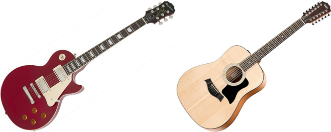

En realidad no tengo muchos hobbies pero creo que considedaria mi favorito el tocar la guitarra
Tocar la guitarra no es un hobbie nuevo para mi pero ya llevaba bastante tiempo sin practicar entonces ultimamente cuando volví tube que aprender nuevamente muchas de las canciones que conocia antes. Mi guitarra favorita para tocar es la electrica pero tambien uso la acustica para tocar algunas canciones.